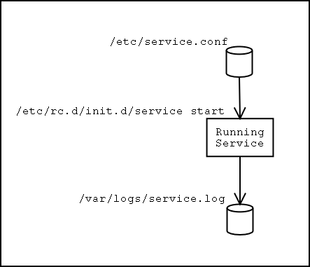
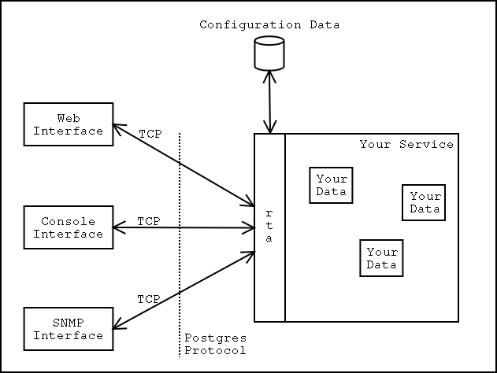

Run Time Access |
RTA is a specialized memory resident interface to the internal data of your application. It is not a stand-alone server but a library which attaches to your program and offers up your program's internal structures and arrays as tables in a database and as files in a virtual file system. The database interface uses a subset of the Postgres protocol and is compatible with the Postgres bindings for C, PHP, and the Postgres command line tool, psql. The file system interface is based on the Fuse package by Miklos Szeredi.
One of the problems facing Linux is the lack of run time access to status, statistics, and configuration of a service once the service has started. We assume that to configure an application we will be able to ssh into the box, vi the /etc configuration file, and do a 'kill -1' on the process. Real time status and statistics are things Linux programmers don't even think to ask for. The need for run time access is particularly pronounced for network appliances where ssh is not available or might not be allowed.
|  |
Another problem for appliance designers is that more than one type of user interface may be required. Sometimes a customer requires that no configuration information be sent over an Ethernet line which transports unsecured user data. In such a case the customer may turn off the web interface and require that configuration, status, and statistics be sent over an RS-232 serial line. Other popular interfaces include the VGA console, SNMP MIBs, and LDAP.
The RTA package helps solve both of these problems by giving run time access to the data structures and arrays inside your running program. With minimal effort, you make your program's data structures appear as tables in a Postgres database and/or as files in a file system.
|  |
For example, say you have a structure for TCP connections defined as:
struct tcpconn {
int fd; // conn's file descriptor
int lport; // local port number
int dport; // destination port number
long nsbytes; // number of sent bytes
long nrbytes; // number of received bytes
long nread; // number of reads on the socket
long nwrite; // number of writes on the socket
};
You might then define an array of these structures as:
struct tcpconn Conns[20];
This array of structs could also be considered a table with seven columns and twenty rows. RTA maps this table into a Postgres database and into files in a virtual file system.
The RTA package gives your program a socket interface like that of a Postgres database. It allows any programming language with a Postgres binding to query your table of TCP connections....
SELECT lport, dport FROM Conns WHERE fd != -1;
UPDATE Conns SET dport = 0 WHERE fd = -1;
Only two commands, SELECT and UPDATE, are implemented, but they give you tremendous power to interact with your program. The RTA SQL implementation includes a WHERE clause and both LIMIT and OFFSET. Say you want to allocate one tcpconn by setting the file descriptor to a non-negative number. The UPDATE part of the command would be 'UPDATE Conns SET fd=newfd'. To change only a row where the file descriptor is -1, we add 'WHERE fd=-1'. We want to change only one row so we add 'LIMIT 1'. The final command would be:
UPDATE Conns SET fd=newfd WHERE fd=-1 LIMIT 1
RTA also offers file system access to your tables. The RTA file system interface is based on the Fuse package by Miklos Szeredi. Each of your tables is visible as a subdirectory under the mount point you specify. For example, if your application's mount point is /mnt/app, the above table of TCP connections would appear as /mnt/app/Conn with subdirectories fd, lport, dport, nsbytes, nrbytes, nread, and nwrite. Each of the column subdirectories has a file for each row in the table. The file can be read or written and contains the table value of that row and column.
Both the database and the file system interface point to the actual data in memory in your program. They are not copies of the data.
The advantages of separating the user interface programs from the daemon proper fall into the broad categories of design, coding, debug, and capabilities.
From a design point of view, the division forces you to decide early in the design what exactly is offered as part of the UI without worrying how it is displayed. The thought process required to design the tables forces you to think through the real design of your application. The tables might form the internal functional specification of your application.
While coding, the table definitions are what the daemon engineers build to and what the UI engineers build from. The division of UI and daemon means you can hire UI experts and daemon experts independently and they can code independently which might help bring the product to market sooner. Since there are Postgres bindings for PHP, Tcl/Tk, Perl, and "C", your developers can use the right tool for the job.
Debug is faster and easier because both the UI and the daemon engineers can simulate the other half easily. For example, the UI engineers could run their UI programs against a real Postgres DB which has the same tables the daemon will have. Testing the daemon can be easier and more complete since it is easy to build test scripts to simulate the UI, and it is easy to examine internal status and statistics while a test runs. The ability to force an internal state or condition helps test corner cases which are sometimes difficult to do in a lab setup.
The capability of your product can be expanded with RTA. Your customers will really appreciate being able to see detailed status and statistics while the program is running. Separating the UIs from the daemon means you can have a wider variety and a greater number of UI programs. SNMP, command line, web, LDAP, ... the list goes on. This flexibility will come in handy if (when!) a customer asks for a custom UI.
RTA offers several other features you might want in a package of this type:
Some effort is required. In order to make your arrays and structures visible, you need to tell RTA about them. Table information includes things like the name, start address, number of rows and the length of each row. (Remember, a "table" is an array of structures, a "row" is one structure in that array, and a "column" refers to one element in the structure.) Column information includes things like the associated table, the column name, the column's data type, and whether we want any special functions called when the column is read or written. Please see the Quick Start or the API reference for more details.